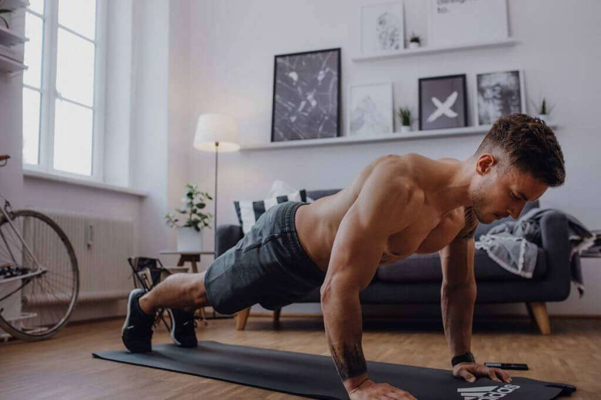

8 Ejercicios de Crossfit para entrenar todo tu cuerpo
Lista de Ejercicios
- AIR SQUAT O SENTADILLA
- BOX JUMP
- DEADLIFT O PESO MUERTO
- SHOULDER PRESS O EMPUJE HOMBROS
- SIT UPS O ABDOMINALES
- PUSH UPS O FLEXIONES
- HSPU O FLEXIONES DE PINO
- PULL UPS O DOMINADAS
1. AIR SQUAT O SENTADILLA
Posición inicial: "Pies ubicados a la anchura de los hombros, punta de pies ligeramente hacia afuera, brazos al frente".
Ejecución: "Las caderas van hacia atrás mientras descienden, se mantiene la curvatura lumbar neutra, las rodillas siguen la linea de los pies, las caderas descienden por debajo de las rodillas, talones apoyados en el suelo".
Beneficios: "Las sentadillas son la base de CrossFit, mejoran tu condición fisica y mantendrán tu cadera, espalda, y rodillas firmes y funcionales".
2. BOX JUMP

Posición inicial: "Pies apoyados en el suelo y al ancho de las caderas o similar, dos palmas de manos es la distancia aproximadamente en que debes estar del cajón".
Ejecución: "Toma impulso con piernas y brazos para saltar sobre el cajón y aterrizar en un cuarto de sentadilla seguido de una extensión completa y pararnos por completo, para bajar podemos saltar hasta la posición inicial con ambos pies o hacer un "step down" que básicamente es dar un paso hacia atrás. La altura del cajón puede variar según el nivel del atleta, pero lo más común son 50-60cm".
Beneficios: "Las sentadillas son la base de CrossFit, mejoran tu condición fisica y mantendrán tu cadera, espalda, y rodillas firmes y funcionales".
3. DEADLIFT O PESO MUERTO
Posición inicial: "Pies al ancho de entre caderas y hombros, agarre de la barra ligeramente por fuera de la barra, esta debe estar en contacto con las espinillas, los hombros se mantienen ligeramente por delante de la barra y la mirada al frente".
Ejecución: "Manteniendo la curvatura lumbar caderas y hombros se elevan simultáneamente hasta que caderas y rodillas se extiendan completamente manteniendo los talones pegados al suelo en todo momento".
Beneficios: "El peso muerto aumenta la fuerza de tu núcleo y además le da estabilidad, fortaleciendo tu agarre".
4. SHOULDER PRESS O EMPUJE HOMBROS

Posición inicial: "Pies a la anchura de caderas, codos ligeramente por delante de la barra, el agarre será ligeramente por fuera de los hombros, agarre completo de la barra mientras esta reposa en el tronco".
Ejecución: "La barra se desplaza en linea vertical por encima de la cabeza hasta lograr una completa extensión de brazos mientras empujas con los hombros, se debe mantener una curvatura lumbar neutra, piernas extendidas y talones pegados al suelo en todo momento".
Beneficios:"Con este movimiento se trabajan músculos de los hombros ante todo".
5. PUSH UPS O FLEXIONES

Posición inicial: "Manos y pies apoyados en el suelo, las manos deben estar alineadas con los hombros, espalda, caderas y piernas deben formar una linea horizontal y los pies deben estar pegados o cercas uno del otro".
Ejecución: "Mientras se mantiene el peso concentrado en los brazos, se desciende con los codos cerca del torso hasta tocar el suelo con el pecho y manteniendo el cuello en posición neutral. Es importante activar glúteos y abdomen durante el movimiento mientras espalda y caderas descienden manteniendo esa linea horizontal".
Beneficios:"Trabaja pectorales y abdominales. Los fondos de brazos son un movimiento completo en el que trabaja toda la cadena anterior, incluidos los músculos de la pared abdominal".
6. SIT UPS O ABDOMINALES
Posición inicial: "Sentado con las piernas juntas y talones pegados o en forma de "mariposa", espalda recta".
Ejecución: "El tronco va hacia atrás mientras las manos tocan el suelo por detrás de la cabeza, el tronco se eleva hacia adelante manteniendo la espalda lo más recta posible, los hombros superan la linea de la cadera mientras las manos tratan de ir por delante de la punta de los pies".
Beneficios: "Activan los músculos abdominales de forma directa".
7. HSPU O FLEXIONES DE PINO
Posición inicial: "Para comenzar el ejercicio debemos apoyar ambas palmas de las manos en el suelo, separadas poco más allá del ancho de los hombros, cerca de una pared donde colocaremos los pies. Con los brazos extendidos, nos colocamos en posición vertical mediante la contracción del abdomen.".
Ejecución: "Comienza extendiendo los brazos y piernas, y presionando la parte inferior de la espalda contra el suelo. Una vez que hayas alcanzado la "posición hueca del cuerpo", une las manos y los pies en un movimiento lento y controlado. Expulsa el aire mientras subes, y empuja las costillas hacia abajo.".
Beneficios: "Algunos de los beneficios de las flexiones en pino o handstand push up es mejorar mucho la fuerza de tus brazos y hombros. Además de poder centrarte en el equilibrio.".
8. PULL UPS O DOMINADAS
Posición inicial: "Agarrar la barra con ambas manos al ancho de los hombros, las palmas mirando hacia al frente, brazos completamente extendidos, abdomen y glúteos apretados, pies colgando y con las puntas hacia abajo".
Ejecución: "Desde una posición de colgado tira con tus brazos hacia arriba hasta que la barbilla sobrepase la altura de la barra, los codos deben mantenerse cerca del torso y el cuello debe estar relajado. utiliza la fuerza del abdomen para encontrar una subida más estable".
Beneficios: "Incremento de fuerza y masa muscular especialmente en espalda y brazos".
INICIO